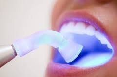

Clareamento dental pode ser uma maneira muito eficaz de clarear a cor natural de seus dentes sem remover qualquer da superfície do dente. Não se pode fazer uma mudança completa da cor, mas sempre é possível melhorar.
Há uma série de razões pelas quais você pode ter seus dentes clareados. Todo mundo é diferente; e assim como o nosso cabelo e cor da pele variam, assim também são nossos dentes. Os dentes podem também ser escurecidos por alimentos e bebidas, tais como café, chá, vinho tinto. Fumar também pode manchar os dentes. 'Cálculo' ou tártaro também pode afetar a cor dos seus dentes. Algumas pessoas podem ter coloração sob a superfície, o que pode ser causado por certos antibióticos ou por pequenas fissuras nos dentes que ocupam manchas.
O claremento à laser é o método mais usual de clareamento dental. O dentista irá avaliar seu caso e dizer qual o melhor método. Primeiro o dentista vai colocar um protetor de borracha ou um gel em suas gengivas para protegê-los. Ele, então, irá aplicar o produto clareador nos dentes, deixando agir de acordo com o método escolhido. Em seguida, uma luz ou laser é sobre os dentes para ativar a substância. A luz acelera a reação do produto de clareamento e a alteração de cor pode ser alcançado mais rapidamente.
O total do tratamento pode ser feito normalmente dentro de três sessões dependendo de cada caso, geralmente de uma hora.
Os efeitos do clareamento são pensados para durar até três anos. No entanto, isto pode variar de pessoa para pessoa. O efeito é menos provável de durar tanto tempo, se você fuma, ou come ou bebe produtos que podem manchar os dentes. Pergunte ao seu time dental para a sua opinião antes de iniciar o tratamento.
Algumas pessoas podem achar que seus dentes se tornam sensíveis ao frio durante ou após o tratamento. Outros podem sentir desconforto nas gengivas, dor de garganta ou manchas brancas na linha da gengiva. Estes sintomas são geralmente temporários e devem desaparecer dentro de poucos dias do término do tratamento.
